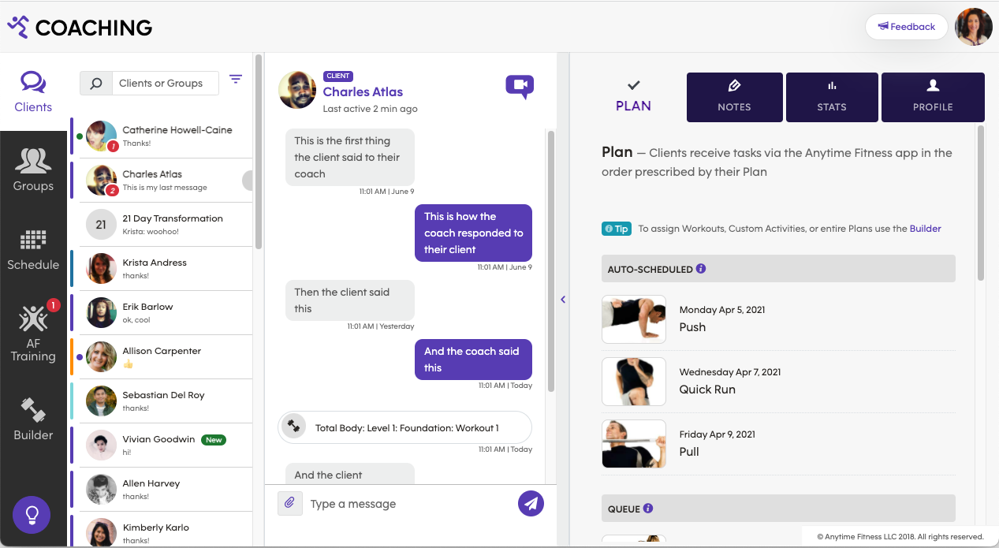
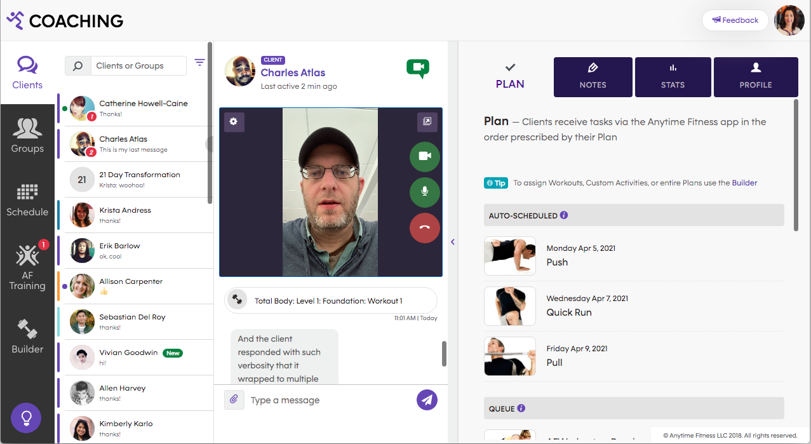
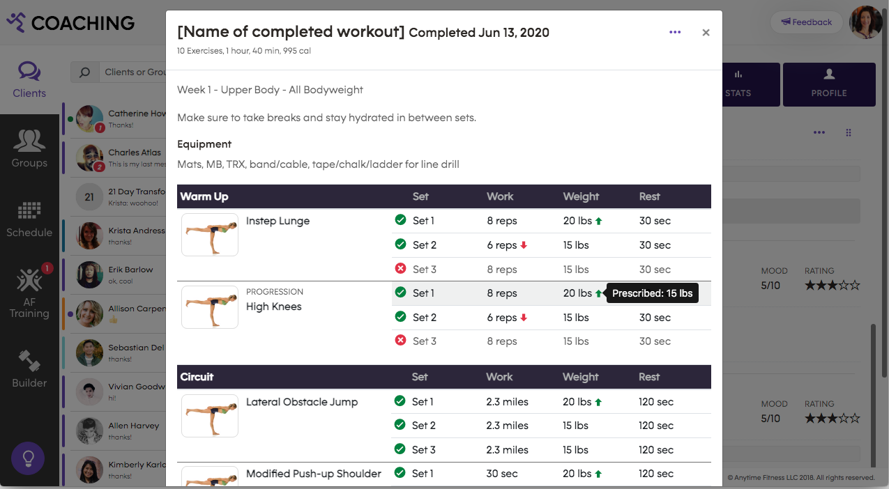
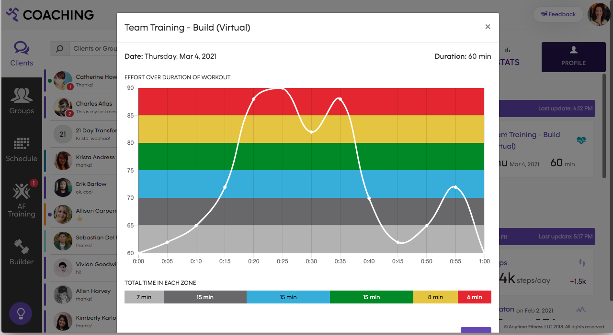
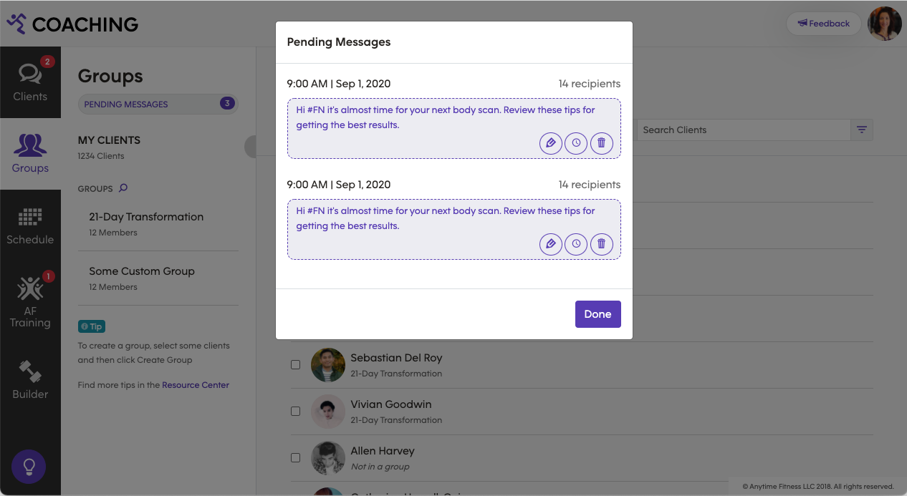
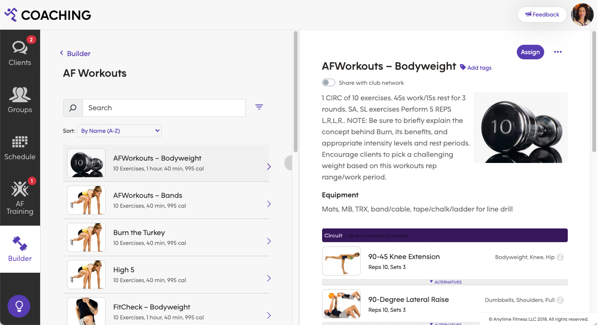

Anytime Fitness Coaching is a web-based application designed to allow fitness coaches to provide a personalized coaching experience while managing a large number of clients.
I built a functional prototype in HTML powered by jQuery, which aided in understanding the nuances of the UX during complicated user flows. It also enabled us to do higher-fidelity user testing early on.
Coaches can easily communicate with their clients via chat or video call with relevant information at their fingertips.
The responsive UI was designed to give coaches access to all of their clients information with as few clicks as possible, without ever taking them away from their active chat or video call.
Designing in HTML allowed me to demonstrate the UX for dynamic events, such as toast alerts for incoming messages and the client list reordering as events fire.




Anytime Fitness Coaching integrates with the Anytime Fitness member app, where clients chat with their coach and receive workout assignments which coaches can monitor, along with other health metrics.
Certain activities are designed to be done for multiple clients at once.
Coaches can also schedule and initiate virtual group training sessions, which are essentially group video meetings. In order to simulate the experience of a coach running a group video meeting, I used animated gifs in place of client videos in the mock up, to ensure critical UI would still be discoverable even with a lot of other random motion on the screen.
Coaches can schedule messages to be broadcast to many clients at once, using placeholders for data points to personalize them.

Anytime Fitness Coaching isn't just an efficient and fully-featured client relationship management platform, it's also a robust content management and distribution system.
Coaches build workouts using a library of exercises they can modify or add to.

I've barely scratched the service of the advanced functionality of the Coaching platform, all of which is mocked up to extraordinarily high fidelity using HTML, CSS, and simple scripting. Ask me for a demo of the prototype!